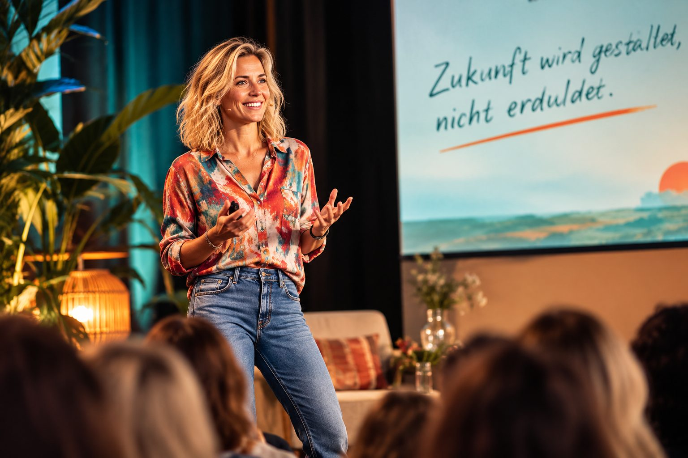

Neugier
Ich möchte verstehen, was gerade entsteht, ohne jede neue Entwicklung sofort zum großen Trend erklären zu müssen.

Hinter den Nachrichten über neue Technologien. Hinter den Prognosen über unsere Arbeitswelt. Hinter diesem seltsamen Gefühl, dass sich gerade etwas verändert und wir noch gar nicht wissen, wie wir damit leben werden.
Viele Jahre war mein beruflicher Alltag geprägt von Dingen, die funktionieren sollten. Probleme lösen, Entscheidungen treffen, den nächsten Schritt planen. Das liegt mir bis heute.
Irgendwann wurden meine Fragen größer. Mich interessierte zunehmend, wie Menschen mit Veränderungen umgehen, welche Zukunftsbilder uns leiten und was passiert, wenn wir anfangen, eine andere Möglichkeit überhaupt für denkbar zu halten.
So entstand Auf Zukunftskurs. Als persönliches Projekt, ohne den Druck, daraus ein großes Unternehmen machen zu müssen. Ich beobachte, probiere aus, spreche mit Menschen und nehme euch mit in die Fragen, die bei mir hängen bleiben.

Keine Heldinnenreise. Eher eine Reihe von Abzweigungen, bei denen eine Frage immer etwas hartnäckiger wurde.
Arbeiten, organisieren, Lösungen finden. Die Welt schien meistens ziemlich gut erklärbar.
Technologische Entwicklungen, gesellschaftliche Veränderungen und die Frage nach dem guten Leben lassen mich nicht mehr los.
Ich probiere KI aus, mache Videos, teste Werkzeuge und zeige anderen, was damit möglich ist.
KI bleibt Teil der Geschichte. Mein eigentliches Thema ist größer geworden: Zukunft, Menschsein und die Möglichkeiten dazwischen.
Ich möchte verstehen, was gerade entsteht, ohne jede neue Entwicklung sofort zum großen Trend erklären zu müssen.
Ich liefere gern Material für die eigene Meinungsbildung. Die fertige Antwort darfst du dir selbst bauen.
Ein mögliches Morgen ist noch keine Tatsache. Genau darin liegt manchmal erstaunlich viel Freiheit.
Zuversicht heißt für mich nicht, dass alles gut wird. Es heißt, dass wir Handlungsmöglichkeiten suchen können.
Und dann wird aus einem Gedanken ein Gespräch mit einem Raum voller Menschen.
Wer wissen möchte, wie das alles angefangen hat, kann in meinem alten YouTube-Kanal stöbern. Dort habe ich als „Emma learns AI“ Tools ausprobiert, erklärt und meine eigene Lernreise dokumentiert.
Zu „Emma learns AI“ auf YouTube ↗